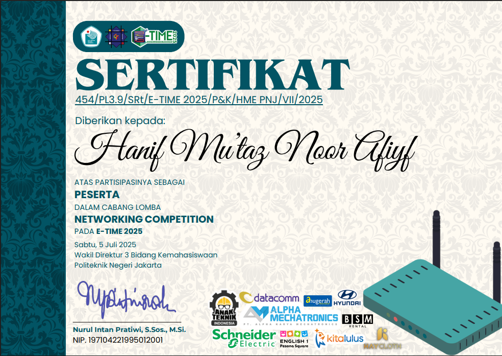
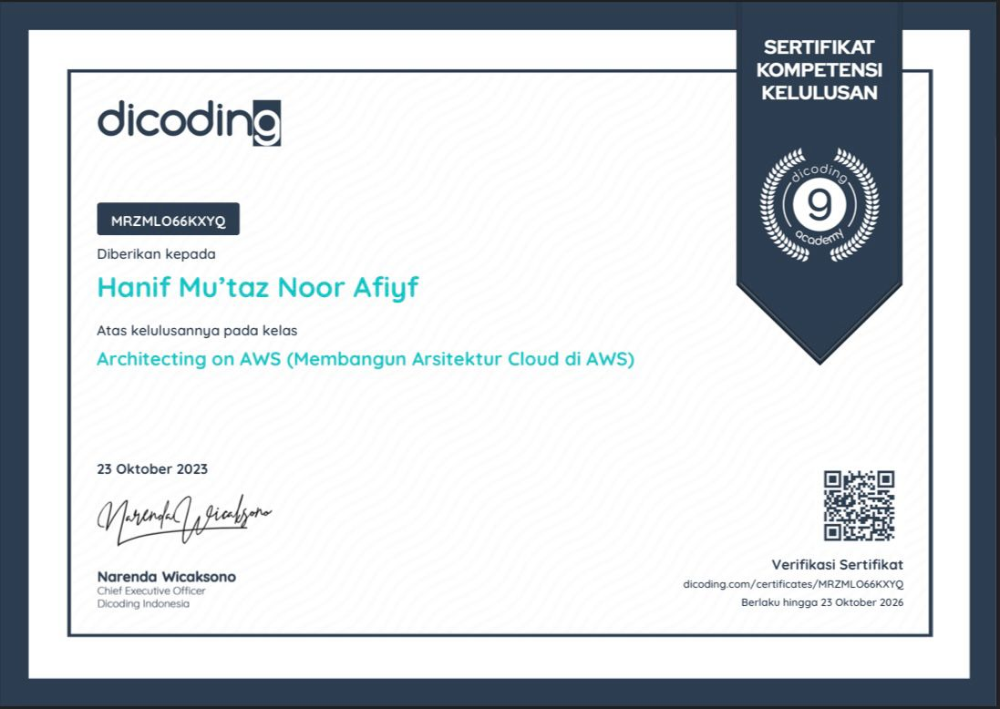
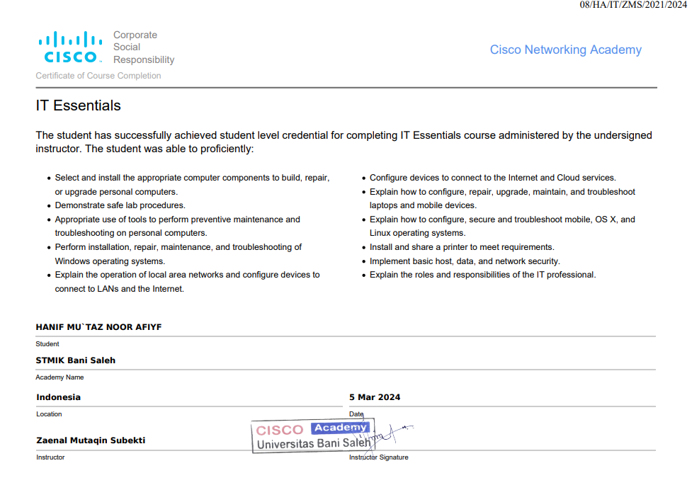
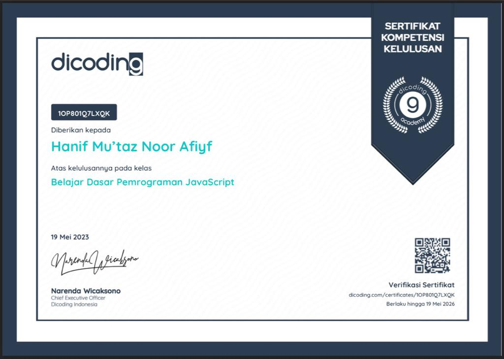

Hanif Mu'taz Noor Afiyf System Builder.
Saya membangun sistem yang membuat tim manufaktur bekerja lebih cerdas — dari dashboard real-time hingga integrasi sistem mesin industri. Full-stack developer. System analyst. Process improvement.
Bukan sekadar IT.
Saya
membangun sistem.
Perjalanan saya tidak dimulai dari dunia programming. Saya mulai sebagai guru, lalu EDC field technician, lalu IT operator — setiap peran mengajarkan sesuatu yang berbeda tentang bagaimana sistem, manusia, dan proses saling berkaitan.
Ketika bergabung di PT Hirose Electric Indonesia pada Januari 2026, saya dipercaya sebagai Main PIC sistem ConMas (iReporter) — sistem data QA inti untuk seluruh lantai produksi. Dalam beberapa bulan, saya mengembangkan dashboard produksi dan sistem monitoring yang mengubah proses rekap manual menjadi monitoring data real-time lintas departemen.
Fokus saya bukan sekadar membangun aplikasi, tetapi membangun sistem yang menghubungkan manusia, proses, data, dan operasional manufaktur. Memahami bisnis dari dalam, lalu membangun alatnya sendiri — itulah yang membedakan sistem yang sekadar berjalan dengan sistem yang benar-benar dipakai orang.
Sistem yang saya bangun
dan benar-benar dipakai.
PM Monitoring System
Dashboard Produksi Real-Time
PM Monitor Web App
Migrasi PM Monitoring System ke platform web menggunakan CI4 sebagai backend. Dirancang iPad-friendly untuk akses langsung di lantai produksi. Mencakup desain arsitektur DB, setup integrasi ODBC, dan UAT ke direktur.
Machine Data Integration — Keyence
Riset dan perancangan integrasi data langsung dari mesin Keyence ke sistem iReporter iPad via middleware. Mencakup identifikasi protokol komunikasi mesin (RS232/USB/LAN), desain flow machine-to-system, dan uji koneksi ke PC/middleware.
Sistem Input Insentif PAT
Dibangun untuk SD Islam Al Anshar — aplikasi web input insentif guru (PAT) dengan multi-role authentication. Menggantikan proses Excel manual, error berkurang ±30%.
Otomasi Laporan Proyek
Untuk PT DCT Total Solution — auto-SPK generator, otomasi uang jalan, dashboard progress. Database 5-sheet terintegrasi menggunakan XLOOKUP, LET, Named Range + auto-export PDF.
Tech stack
Dari lapangan ke sistem.
IT Staff — Kaizen Department
Bekasi, Indonesia
- ▸Main PIC sistem ConMas (iReporter) yang digunakan sebagai sistem data QA produksi — bertanggung jawab atas konfigurasi, troubleshooting, standardisasi data, koordinasi vendor, serta pengembangan improvement berbasis kebutuhan operasional
- ▸Membangun PM Monitoring System — waktu monitoring turun dari 1–2 jam ke beberapa menit, risiko keterlambatan PM berkurang 70–80%
- ▸Membangun Dashboard Produksi Real-Time (Express + React + PostgreSQL) — waktu rekap berkurang 60–80%
- ▸Sedang mengembangkan PM Monitor web (CI4) dan memimpin R&D integrasi mesin Keyence ke sistem iReporter
- ▸Monitoring server harian, pengelolaan backup (Synology NAS + HDD), data dictionary & standardisasi
Part-time IT Support
- ▸Mendukung stabilitas infrastruktur IT perusahaan melalui troubleshooting sistem, jaringan (LAN/DNS/DHCP), file sharing (SMB), serta backup dan recovery data
- ▸Instalasi & konfigurasi OS (Windows/Linux), manajemen driver, serta perawatan dan upgrade perangkat keras (SSD, HDD, RAM)
- ▸Memastikan ketersediaan sistem dan minimalisasi downtime untuk mendukung operasional produksi perusahaan
Project Support Admin
- ▸Membangun otomasi Excel-VBA: auto-SPK generator, laporan uang jalan otomatis, dashboard monitoring progress
- ▸Merancang database 5-sheet terintegrasi menggunakan XLOOKUP, LET, Named Range untuk integritas data lintas sheet
- ▸Mendukung penjadwalan proyek dan S-curve monitoring — pembaruan status pekerjaan secara berkala
- ▸Menerjemahkan kondisi teknis lapangan menjadi laporan operasional yang mudah dipahami non-teknis
- ▸Koordinasi dengan field team, project PIC, supervisor, dan klien untuk monitoring status dan follow-up kegiatan
Guru & IT Operator
- ▸Membangun sistem input insentif PAT berbasis web (PHP + MySQL) dengan multi-role auth — error berkurang ±30%
- ▸Mengelola data akademik dan dokumentasi akreditasi BAN-S/M
Kredensial
klik sertifikat untuk melihat ukuran penuh










Mari membangun sesuatu.
Terbuka untuk posisi full-time, kolaborasi, dan freelance — terutama di mana IT bertemu operasional.